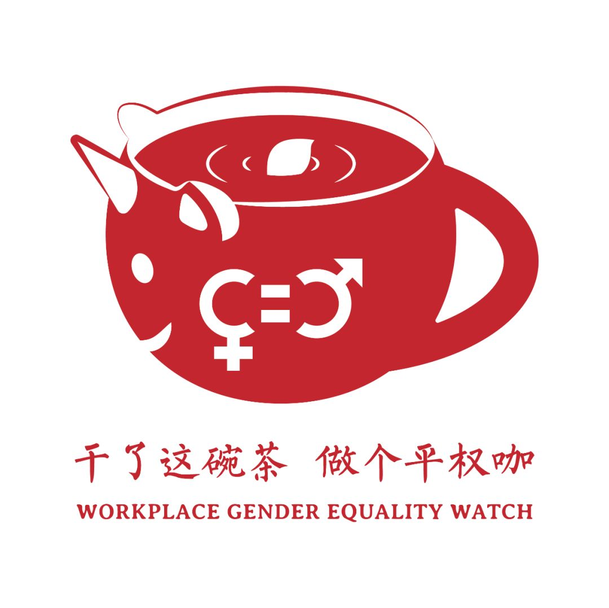

投票|职场性别歧视打假,每天都是315
过去几十年我国经历了快速的经济增长，女性受教育程度不断上升，但就业市场和工作场所的性别歧视问题仍然严峻。很多招聘广告依然写着仅限男性、男性优先或对女性求职者在婚孕等方面做出不合理的限制。
职场性别歧视不仅令人深恶痛绝，同时还违反了我国的相关法律法规。2月21日，人社部等九部门发布通知，再次强调不得以性别为由限制妇女求职就业、拒绝录用妇女，不得询问妇女婚育情况等。该通知受到了很多网友的好评，但也有人质疑它很难落地。
无论是支持该通知还是反对，近年来，职场性别歧视问题确实受到越来越多人的关注。我们梳理了@就业性别歧视监察大队 的微博，选出了18个曝光职场性别歧视的案例。下面这些案例中，有您遭遇过的吗？哪些案例最让您深恶痛绝，煎茶小组邀请您动动小手，表达您的看法。
【投票方式】
投票链接：http://i5988cvqidm1y4bs.mikecrm.com/3JV3r85
或扫下方二维码：
（因微信投票有选项字数限制，本投票由麦克表单提供）
投票截止时间：3月25日 20:00
您最厌恶的职场性别歧视行为是：
1.2019年国家公务员招录考试性别歧视，3383个岗位（占比35.03%）存在性别限制条件。
2.湖北省某政法机关招录计算机、通信、中文、法学、财会、物流等专业毕业生，要求所有专业限男性。
3.中央驻湘单位公务员考录现场预选，考录计划：20余名，考录对象为2019届全日制本科生、研究生，以男生为主。
4.上海市公安系统人民警察学员招考，其中定向招考42名，女性约2名。
5.2019年湖南烟草专卖局系统考试招聘，专卖稽查员、安全管理员、烟叶技术员、配送员等多岗位限男性。

6.中建八局第四建设有限公司投资、金融、财务管理、会计学和会计信息系统等相关专业招聘，要求男生优选。
7.广西科技大学心理中心招聘专职心理教师1-2名，仅限男性，负责开展心理咨询，心理健康课程等大学生心理健康教育工作。
8.中国联通招聘温州县区总经理、副总经理若干名。原则上男性不超过45周岁（1974年2月以后出生）、女性不超过40岁（1979年2月以后出生）。
9.福田区消委会秘书处，招聘法务综合岗劳务派遣工作人员1名，限男性。
10.浙江省医学科学院实验动物中心，招收3名药学方向的考研调剂生，要求男生优先。

11.厦航、江西航2019年度第二阶段公费飞行学员招聘，报名条件为男性，身高168-190厘米。
12.女程序员阿里面试，3轮技术面顺利通过，hr 询问完她的婚姻、生育状况后，认为不符合岗位条件，最后被淘汰。
13.智联招聘：女职员平均薪酬比男性低23%，女性高层仅占18.7%。
14.安徽师范大学专职辅导员招聘，人文社科类（含艺术）男性3人，性别不限1人；不限专业类男性4人，性别不限1人；理工科类男性1人，性别不限2人。
15.苏州市吴中人民医院普外科、皮肤科、心内科等岗位招聘，备注：四证、男性。

16.2019国家综合性消防员招录18665人公告，只有北京招20个女性名额，其他名额全部要男性。
17.山东塞力斯医疗科技有限公司为了不给补偿，用换工作地点逼迫三名女员工“主动”辞职，但无一名男士列入裁员名单中。
18.职场社交平台LinkedIn（领英）发布“女性职业机会”调研显示，35%的男性没有陪产假。
李银河曾说过：“性别歧视的话语和观念还远远没有退出公共话语的舞台，男女平等的事业还将经历一个漫长而艰苦的跋涉过程。”
与大家共勉～